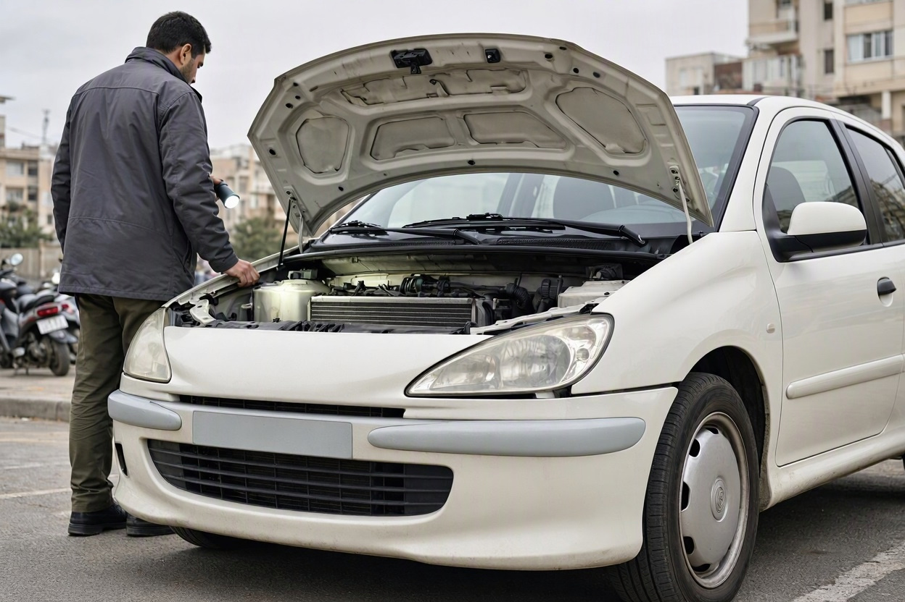
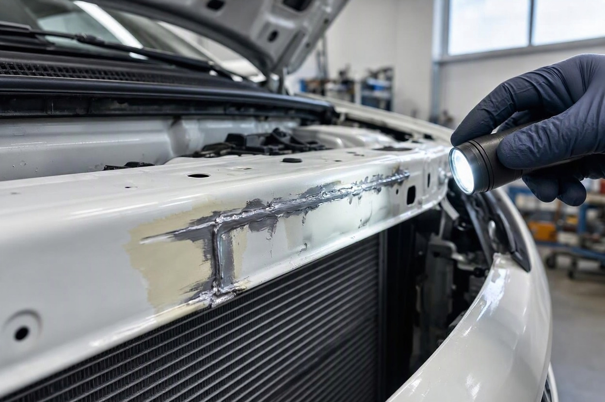
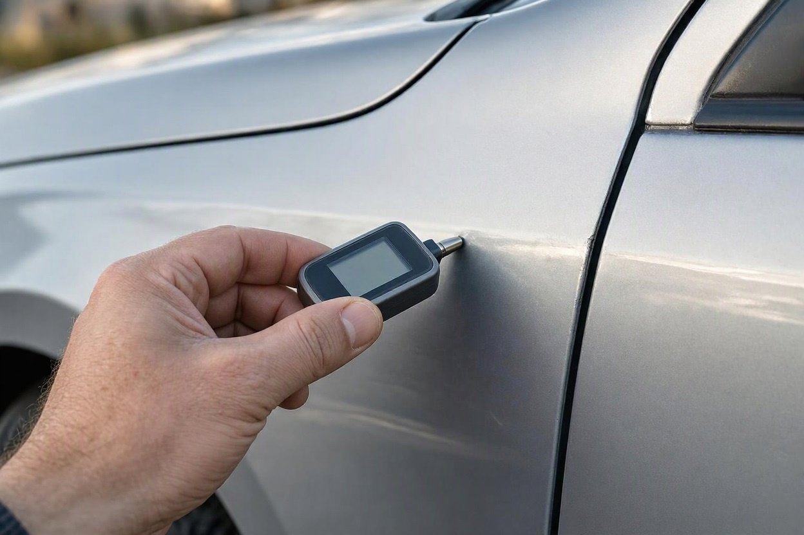
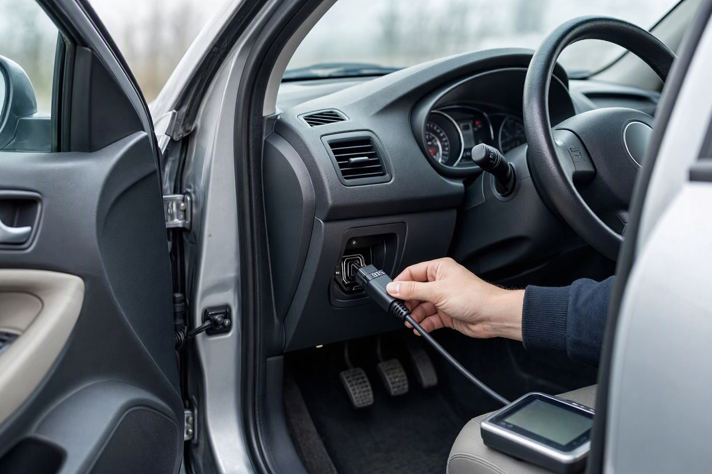
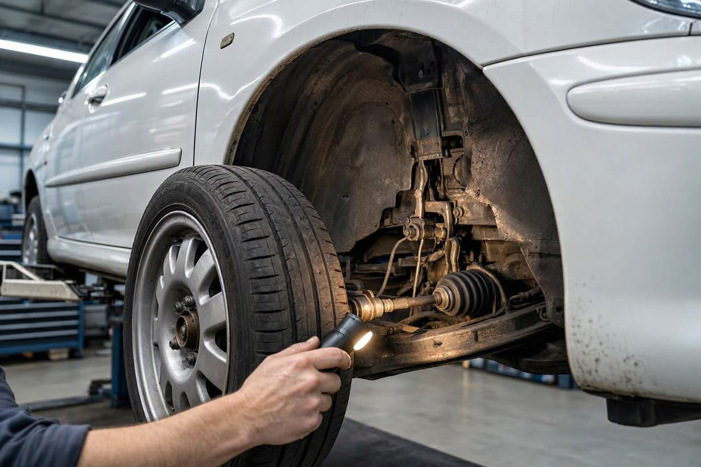

کارشناسی خودرو تصادفی: بعد از تصادف چه بخش هایی باید بررسی شود؟
یک پژو ۲۰۶ را تصور کنید که از جلو تصادف کرده، سپر و چراغ و کاپوتش عوض شده و حالا رنگ و درزها تقریباً یکدست به نظر میرسند. فروشنده میگوید «فقط یک ضربه سبک بود و همهچیز درست شد». شما هم چیزی جز چند قطعه نو نمیبینید.
مشکل اینجاست که در تصادف، قطعات بیرونی فقط اولین لایه آسیباند. انرژی ضربه از سپر به ضربهگیر، سینی جلو، شاسیها، جلوبندی و گاهی تا ستونها منتقل میشود. کارشناسی خودرو تصادفی یعنی همین مسیر را دنبال کنیم و ببینیم ضربه تا کجا رفته است. این راهنمای کارماچک بخش به بخش توضیح میدهد بعد از تصادف چه چیزهایی باید بررسی شود، کدام نشانهها جدیترند و کجا تشخیص چشمی کافی نیست.
در کارشناسی خودرو تصادفی، اول سازه بررسی میشود و بعد ظاهر: شاسیها، سینی جلو یا پنل عقب، ستونها و کف خودرو. سپس سیستم ایمنی (ایربگ و کمربند)، جلوبندی و فرمان، رادیاتور و موتور، سیمکشی و در آخر رنگ و قطعات تعویضی. تعمیر تمیز بدنه بهتنهایی نشان نمیدهد که سازه خودرو سالم مانده است.
خلاصه در یک دقیقه
- محل ضربه تعیین میکند کجا را دقیقتر ببینید؛ ضربه جلو معمولاً سینی، رادیاتور و جلوبندی را درگیر میکند.
- آسیب شاسی، ستون یا کف خودرو از رنگشدگی مهمتر است، چون روی ایمنی و ارزش خودرو اثر مستقیم دارد.
- خاموشبودن چراغ ایربگ برای اطمینان کافی نیست؛ وضعیت کیسهها و خطاهای ثبتشده باید با دستگاه دیاگ بررسی شود.
- کشیدن فرمان، سایش نامنظم لاستیک و صدای جلوبندی بعد از تعمیر، نشانه ضربه به تعلیق یا همراستایی است.
- فاکتور تعمیر و سوابق خسارت کمک میکنند، اما جای بررسی فنی روی خود خودرو را نمیگیرند.
چرا کارشناسی خودرو تصادفی با کارشناسی معمولی فرق دارد؟
در کارشناسی معمولی، کارشناس همه بخشها را با وزن تقریباً برابر بررسی میکند. در خودروی تصادفی، یک سؤال مشخص وجود دارد: ضربه تا کجا نفوذ کرده و تعمیر تا کجا درست انجام شده است؟ جواب این سؤال، اولویت بررسی را تعیین میکند.
خودروهای امروزی طوری ساخته میشوند که بخش جلو و عقب در تصادف جمع شوند و انرژی را جذب کنند. این طراحی از سرنشین محافظت میکند، اما یعنی بعد از ضربه، قطعاتی که دیده نمیشوند هم تغییر شکل دادهاند. تعمیرکار ممکن است قطعات بیرونی را عوض کند و بدنه را صاف کند، ولی کشش شاسی یا جوشکاری سینی انجام شده باشد و از بیرون پیدا نباشد.
محل ضربه کدام بخش ها را درگیر می کند؟
بهترین نقطه شروع، پیدا کردن جهت ضربه است. رنگشدگی، قطعات تعویضی و پیچهای بازشده معمولاً نشان میدهند ضربه از کدام سمت وارد شده. بعد از آن، بخشهای پشت آن نقطه را با دقت بیشتری بررسی کنید.
| محل ضربه | بخش هایی که باید دقیق تر بررسی شوند | نشانه قابل توجه |
|---|---|---|
| جلو (شاخ به شاخ یا عقبزدن به خودروی جلویی) | ضربهگیر، سینی جلو، شاسیهای جلو، رادیاتور و فن، پایه موتور، جلوبندی، ایربگهای جلو | جوش یا موج روی سینی، رادیاتور نو، کشیدن فرمان |
| عقب | پنل پشت، کف صندوق، شاسیهای عقب، گلگیرهای عقب، اگزوز، سنسورهای دنده عقب | چینخوردگی کف صندوق، بسته نشدن درست در صندوق |
| بغل (درها یا ستون وسط) | ستونها، رکاب، درها، ایربگهای بغل و پردهای، کمربند ایمنی | جوش روی ستون یا رکاب، اختلاف فاصله بالای درها |
| زیر خودرو (برخورد با جدول یا مانع) | کاسه روغن، رام زیر موتور، طبق و سیبک، رینگ، شاسی کف | نشتی روغن، رینگ تابدار، صدای جلوبندی |
| سقف (واژگونی) | سقف، ستونها، شیشهها، ایربگ پردهای، تمام بدنه | رنگ سقف، تودوزی سقف تعویضی، چند ستون رنگشده |
این جدول یک نقشه شروع است و جای بررسی کامل را نمیگیرد. گاهی ضربه سنگین جلو به شاسیهای میانی و ستونهای جلو هم میرسد، حتی اگر از بیرون فقط جلوی خودرو تعمیر شده باشد.
شاسی، سینی و ستون ها: مهم ترین بخش در خودرو تصادفی
اگر فقط یک بخش را بتوانید دقیق بررسی کنید، آن بخش سازه خودرو است. سازه یعنی اسکلتی که بدنه، موتور و تعلیق روی آن سوار میشوند: شاسیهای جلو و عقب، سینی جلو، ستونها، رکابها، کف خودرو و پنل عقب.

سینی جلو و شاسی های جلو
کاپوت را باز کنید و سینی جلو، محل اتصال گلگیرها و ابتدای شاسیها را نگاه کنید. چسب درز کارخانهای معمولاً یکدست و منظم است. اگر چسب نو، جوش نقطهای غیرمنظم، اثر سنگزدن یا رنگ متفاوت دیدید، احتمال تعمیر سازه بالا میرود. پیچهای گلگیر و سینی که آثار باز و بسته شدن دارند هم به همین مسیر اشاره میکنند.
ستون ها، رکاب و کف خودرو
لاستیک دور درها را کمی کنار بزنید و لبه ستونها و رکاب را ببینید. کف صندوق عقب و زیر موکت آن هم جای خوبی برای پیدا کردن چینخوردگی یا جوش است. آسیب این بخشها معمولاً یعنی ضربه شدیدتر از آن بوده که فروشنده اعلام کرده.
تشخیص قطعی کشش شاسی همیشه با چشم ممکن نیست. برای جزئیات بیشتر درباره نشانهها و محدودیتهای این بررسی، راهنمای تشخیص شاسی ضربه خورده را بخوانید.
بدنه، رنگ و قطعات تعویضی را چطور بخوانیم؟
رنگ و بدنه سرنخ میدهند که ضربه کجا بوده و تعمیر چقدر گسترده بوده است. با این حال، رنگشدگی خودش تشخیص نهایی نیست؛ یک گلگیر رنگشده میتواند حاصل یک خط ساده باشد یا بخشی از یک تصادف سنگین.

- فاصله درز کاپوت، درها و صندوق را در دو طرف خودرو مقایسه کنید. اختلاف محسوس یعنی قطعه جابهجا یا بدنه تغییر شکل داده است.
- زیر نور روز، از زاویه کم به بدنه نگاه کنید تا موج، اختلاف براقیت و پوست پرتقالی رنگ دیده شود.
- پیچهای کاپوت، گلگیر و لولای درها را ببینید. رنگ پریده یا رد آچار روی آنها نشانه باز و بسته شدن است.
- کد و تاریخ روی شیشهها و چراغها را با هم مقایسه کنید. شیشه یا چراغی که تاریخ متفاوت دارد احتمالاً عوض شده است.
- اگر ضخامتسنج در دسترس است، همه قطعات را اندازه بگیرید و اعداد را با هم مقایسه کنید، نه با یک عدد ثابت.
رنگ تمیز کاپوت و گلگیر جلو در کنار سینی دستخورده، تصویر کاملاً متفاوتی با یک کاپوت رنگشده و سینی سالم دارد. برای همین بدنه را همیشه همراه با سازه پشت آن بررسی کنید.
ایربگ، کمربند و سیستم های ایمنی بعد از تصادف
اگر در تصادف کیسه هوا باز شده باشد، کیسه، ماژول کنترل و معمولاً کمربندهای پیشکش باید تعویض شوند. خودرویی که ایربگش باز شده، ضربه قابل توجهی خورده است و این خودش دلیل کافی برای بررسی دقیق سازه است.

خاموششدن چراغ ایربگ بعد از روشنکردن خودرو نشانه خوبی است، اما بهتنهایی اطمینان نمیدهد. در بعضی تعمیرات غیراصولی، چراغ را از کار میاندازند یا به جای ماژول اصلی، قطعهای میگذارند که خطا را پنهان کند. چند نکته را بررسی کنید:
- چراغ ایربگ هنگام سوئیچ روشن شود و چند ثانیه بعد خاموش شود. اگر اصلاً روشن نشود، مشکوک است.
- درب ایربگ فرمان و داشبورد را از نظر رنگ، بافت و درز با بقیه داشبورد مقایسه کنید.
- کمربندها را کامل بیرون بکشید و ببینید روان جمع میشوند و قفل اضطراری کار میکند.
- با دستگاه دیاگ، خطاهای فعلی و ذخیرهشده سیستم ایربگ را بخوانید.
دیاگ خودرو در خودروی تصادفی فقط برای موتور نیست. در خودروهایی که ترمز ضدقفل، سنسور پارک یا سیستمهای کمکی دارند، خطاهای این بخشها هم میتوانند ردی از تصادف باشند.
پیش از خرید خودرو تصادفی، سازه و ایمنی آن را بررسی کنید
اگر خودرو سابقه تصادف دارد و مطمئن نیستید ضربه تا کجا رفته، بررسی تخصصی شاسی، بدنه و دیاگ میتواند ابهامهای معامله را کمتر کند.
رزرو کارشناسی خودروجلوبندی، فرمان و تعلیق: نشانه هایی که در رانندگی پیدا می شوند
ضربه به چرخ یا گوشه خودرو معمولاً طبق، سیبک، میلفرمان، کمکفنر و رینگ را درگیر میکند. بعضی از این آسیبها در ظاهر دیده نمیشوند و فقط در رانندگی یا روی دستگاه تنظیم فرمان معلوم میشوند.

در تست رانندگی به این موارد توجه کنید
- خودرو در جاده صاف با فرمان رها به یک سمت نکشد.
- وقتی خودرو مستقیم حرکت میکند، غربیلک فرمان صاف باشد و کج نایستد.
- هنگام عبور از دستانداز صدای تق یا لقی از جلو یا عقب شنیده نشود.
- زاویه گردش فرمان به چپ و راست تقریباً یکسان باشد.
لاستیکها هم سرنخ خوبیاند. سایش یکطرفه روی لبه داخلی یا خارجی یک چرخ، در حالی که چرخهای دیگر یکنواخت ساییده شدهاند، معمولاً نشان میدهد زاویه آن چرخ به هم خورده است. البته تنظیم نبودن فرمان دلایل دیگری هم دارد، پس این نشانه را کنار بقیه یافتهها بسنجید.
موتور، رادیاتور و سیستم خنک کاری بعد از تصادف از جلو
در تصادف از جلو، رادیاتور، کندانسور کولر و فن اولین قطعات مکانیکی هستند که آسیب میبینند. اگر این قطعات نو هستند، طبیعی است؛ سؤال مهم این است که ضربه به پایه موتور، شاسی جلو و قطعات پشت رادیاتور هم رسیده یا نه.
- پایههای موتور را از نظر ترک، لاستیک پاره یا جابهجایی بررسی کنید. لرزش زیاد در دنده یا هنگام روشنشدن میتواند به همین بخش مربوط باشد.
- زیر خودرو را برای نشتی آب، روغن یا مایع کولر نگاه کنید.
- بعد از چند دقیقه کار در جا و رانندگی، دمای موتور را زیر نظر بگیرید و ببینید فن بهموقع روشن میشود.
- اگر خودرو از زیر ضربه خورده، کاسه روغن و رام زیر موتور را برای فرورفتگی و نشتی ببینید.
سیم کشی، چراغ ها و سنسورها
دستهسیم جلوی خودرو از کنار گلگیرها و پشت سپر عبور میکند. در تعمیرات بعد از تصادف، این سیمها گاهی بریده و دوباره به هم وصل میشوند. اتصال غیراصولی ممکن است امروز مشکلی نداشته باشد و چند ماه بعد با رطوبت و لرزش، خطای برقی ایجاد کند.
- همه چراغها، راهنماها، مهشکنها و بوق را امتحان کنید.
- پشت چراغها و کنار باتری را برای چسب برق، سیمهای وصلهشده و سوکتهای غیراصلی نگاه کنید.
- سنسورهای دنده عقب، دوربین و آینههای برقی را تست کنید، بهخصوص اگر ضربه از عقب یا بغل بوده.
- به چراغهای هشدار پشت آمپر بعد از روشن شدن خودرو دقت کنید.
کارشناسی خودرو تصادفی را به چه ترتیبی انجام دهیم؟
ترتیب درست کمک میکند هیچ بخشی جا نماند و یافتههای هر مرحله، مرحله بعد را هدایت کند.
- مرحله اول:از فروشنده درباره جهت و شدت تصادف، قطعات تعویضی و محل تعمیر بپرسید و فاکتورها یا عکسهای قبل از تعمیر را بخواهید.
- مرحله دوم:دور خودرو بچرخید و درزها، رنگ، پیچها و تاریخ شیشهها را بررسی کنید تا جهت ضربه مشخص شود.
- مرحله سوم:کاپوت و صندوق را باز کنید و سینی، شاسیها، پنل عقب و کف صندوق را با دقت ببینید.
- مرحله چهارم:ستونها و رکاب را زیر لاستیک درها نگاه کنید و عملکرد درها را در باز و بسته شدن بسنجید.
- مرحله پنجم:چراغهای هشدار، ایربگ و کمربندها را بررسی کنید و در صورت امکان دیاگ بگیرید.
- مرحله ششم:تست رانندگی بگیرید و به کشیدن فرمان، صدای جلوبندی، دمای موتور و عملکرد کولر توجه کنید.
- مرحله هفتم:اگر هر کدام از نشانههای سازهای دیدید، قبل از تصمیم نهایی خودرو را روی جک یا دستگاه تخصصی بررسی کنید.
تصادف چه اثری روی ارزش خودرو دارد؟
اثر تصادف روی قیمت به این بستگی دارد که کدام بخش آسیب دیده و تعمیر چطور انجام شده است. تعویض سپر و چراغ با قطعه اصلی، اثر بسیار کمتری از جوشکاری سینی یا ستون دارد. باز شدن ایربگ و آسیب شاسی معمولاً بیشترین اثر را روی ارزش و قدرت فروش بعدی خودرو میگذارند.
عدد دقیق افت قیمت به مدل، سال، کارکرد و شرایط بازار در همان زمان بستگی دارد و نمیتوان یک درصد ثابت برای همه خودروها گفت. اگر میخواهید بدانید این عوامل چطور کنار هم سنجیده میشوند، روش محاسبه افت قیمت خودرو در تصادف را ببینید. برای برآورد ارزش یک خودروی مشخص هم میتوانید از قیمتگذاری خودرو استفاده کنید.
چه زمانی بررسی تخصصی خودرو تصادفی لازم است؟
بررسی چشمی کمک میکند خودروهای واضحاً مشکلدار را زودتر کنار بگذارید. اما وقتی یکی از این موارد را دیدید، تصمیم را به بررسی تخصصی موکول کنید:
- ایربگ باز شده یا درب ایربگ تعویض شده است.
- روی سینی، شاسی، ستون یا کف صندوق جوش، چسب نو یا چینخوردگی دیده میشود.
- فرمان میکشد یا لاستیکها سایش نامنظم دارند.
- توضیح فروشنده درباره تصادف با قطعات تعویضی و رنگشدگیها نمیخواند.
کارماچک یک مجموعه ارائهدهنده خدمات کارشناسی خودرو در ایران است. در کارشناسی فنی و بدنه خودرو، سازه، رنگ، دیاگ و وضعیت فنی کنار هم بررسی میشوند. فقط ایراد خودرو را شناسایی نمیکنیم؛ اثر آن روی هزینه تعمیر و ارزش واقعی معامله را هم مشخص میکنیم.
جمع بندی
در کارشناسی خودرو تصادفی، ظاهر تمیز آخرین چیزی است که باید به آن اعتماد کنید. مسیر ضربه را از نقطه برخورد به سمت داخل دنبال کنید: سازه، سیستم ایمنی، جلوبندی، موتور و خنککاری، سیمکشی و در آخر رنگ و بدنه. اگر نشانهای از آسیب سازه یا ایربگ دیدید، قیمت پیشنهادی را بر همان اساس بسنجید و قبل از معامله نظر کارشناس را بگیرید.
خودرو تصادفی را با خیال راحت تر بخرید
اگر خودرو سابقه تصادف دارد، بررسی سازه، ایربگ و جلوبندی پیش از معامله کمک میکند با اطلاعات کاملتری تصمیم بگیرید.
ثبت درخواست کارشناسیسؤالات متداول
آیا خرید خودرو تصادفی همیشه اشتباه است؟
نه. خودرویی که تصادف سبک داشته و فقط قطعات بیرونی آن با قطعه مناسب تعویض شده، با قیمت منصفانه میتواند خرید معقولی باشد. مشکل اصلی آسیب سازه، ایربگ بازشده و تعمیر غیراصولی است. تصمیم را بر اساس نتیجه بررسی فنی و تناسب قیمت با وضعیت واقعی خودرو بگیرید.
از کجا بفهمیم ایربگ خودرو باز شده است؟
نشانههایی مثل درب ایربگ با رنگ یا بافت متفاوت، داشبورد تعویضی، روشن نشدن یا خاموش نشدن چراغ ایربگ و کمربند پیشکش نو، احتمال باز شدن ایربگ را بالا میبرند. تشخیص مطمئنتر با خواندن خطاهای سیستم ایربگ با دستگاه دیاگ و بررسی سازه جلوی خودرو انجام میشود.
تعویض قطعه بعد از تصادف بهتر است یا صافکاری؟
برای قطعات بیرونی مثل سپر، کاپوت و گلگیر، تعویض با قطعه اصلی و سالم معمولاً نتیجه بهتری از صافکاری سنگین دارد. در بخشهای سازهای مثل سینی و شاسی، کیفیت تعمیر و روش جوشکاری اهمیت بیشتری دارد. در هر دو حالت، اثر روی قیمت به محل و گستردگی تعمیر بستگی دارد.
آیا با دیاگ میتوان سابقه تصادف را تشخیص داد؟
دیاگ میتواند خطاهای ثبتشده ایربگ، سنسورها و سیستمهای ایمنی را نشان دهد که گاهی ردی از تصادف هستند. اما دیاگ آسیب شاسی، جوشکاری یا رنگشدگی را تشخیص نمیدهد. به همین دلیل دیاگ بخشی از کارشناسی خودرو تصادفی است و جای بررسی بدنه و سازه را نمیگیرد.
فاکتور تعمیر خودرو تصادفی چقدر قابل اعتماد است؟
فاکتور تعمیر نشان میدهد چه قطعاتی تعویض یا تعمیر شده و کمک میکند جهت و شدت ضربه را بهتر بفهمید. ولی فاکتور درباره کیفیت کار چیزی تضمین نمیکند و ممکن است همه تعمیرات را پوشش ندهد. آن را با یافتههای بررسی فنی روی خود خودرو مقایسه کنید.
بعد از تصادف خودروی خودم، چه بخشهایی را باید بررسی کنم؟
بعد از تعمیر، تنظیم فرمان، عملکرد کولر و دمای موتور، چراغهای هشدار، باز و بسته شدن درها و صدای جلوبندی را در چند روز اول زیر نظر بگیرید. اگر ضربه جدی بوده، بررسی سازه و دیاگ کمک میکند مطمئن شوید تعمیر کامل انجام شده و چیزی جا نمانده است.